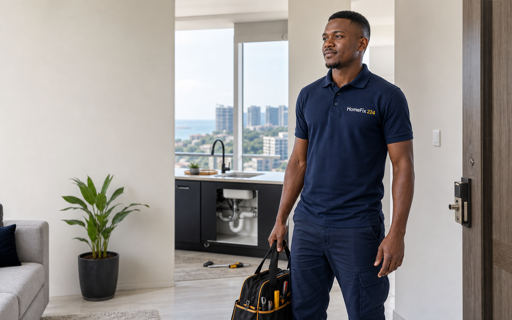

Réponse rapide
Votre besoin est reçu, clarifié et priorisé via WhatsApp.
Plomberie, électricité, climatisation, peinture, nettoyage ou dépannage : envoyez votre besoin sur WhatsApp et HomeFix 224 vous aide à trouver une solution fiable, avec un suivi humain depuis Kipé.

Votre besoin est reçu, clarifié et priorisé via WhatsApp.
Les profils sont sélectionnés progressivement selon leur sérieux.
Estimation, visite ou devis avant intervention quand c’est nécessaire.
Chaque service ouvre une fiche rapide avec les cas fréquents, les informations à fournir et le prochain pas recommandé.
Service, quartier, urgence et photo si possible. Le message WhatsApp est préparé.
HomeFix 224 clarifie le besoin, estime la priorité et vous oriente.
Une visite ou intervention est organisée selon l’urgence et la disponibilité.
L’équipe HomeFix 224
HomeFix 224 avance avec des profils techniques polyvalents pour qualifier les demandes, coordonner les interventions et construire une base de prestataires fiables à Conakry.
Fuite d’eau, panne électrique, climatisation bloquée ou problème technique important.
Pour les bureaux, écoles, restaurants, résidences et expatriés qui veulent un contact unique pour suivre les petits travaux sans perdre de temps.
Base opérationnelle
Kipé, Conakry. Un point de départ clair pour servir les quartiers proches plus vite. Bureaux · PME · résidences · écoles · restaurantsLes réponses essentielles avant d’envoyer une demande.
Le prix dépend du service, du quartier, de l’urgence et du travail à réaliser. HomeFix 224 peut proposer une estimation ou une visite avant intervention.
Les demandes urgentes sont priorisées, surtout en cas de fuite, panne électrique, climatisation bloquée ou problème qui empêche l’utilisation normale du lieu.
Oui. Une photo ou une courte vidéo sur WhatsApp aide à mieux comprendre le besoin et à orienter la demande plus rapidement.
La zone prioritaire est Kipé, Conakry. Les autres quartiers peuvent être traités selon la disponibilité des prestataires.
Le formulaire envoie une notification à HomeFix 224 et prépare aussi votre message WhatsApp pour accélérer le suivi.